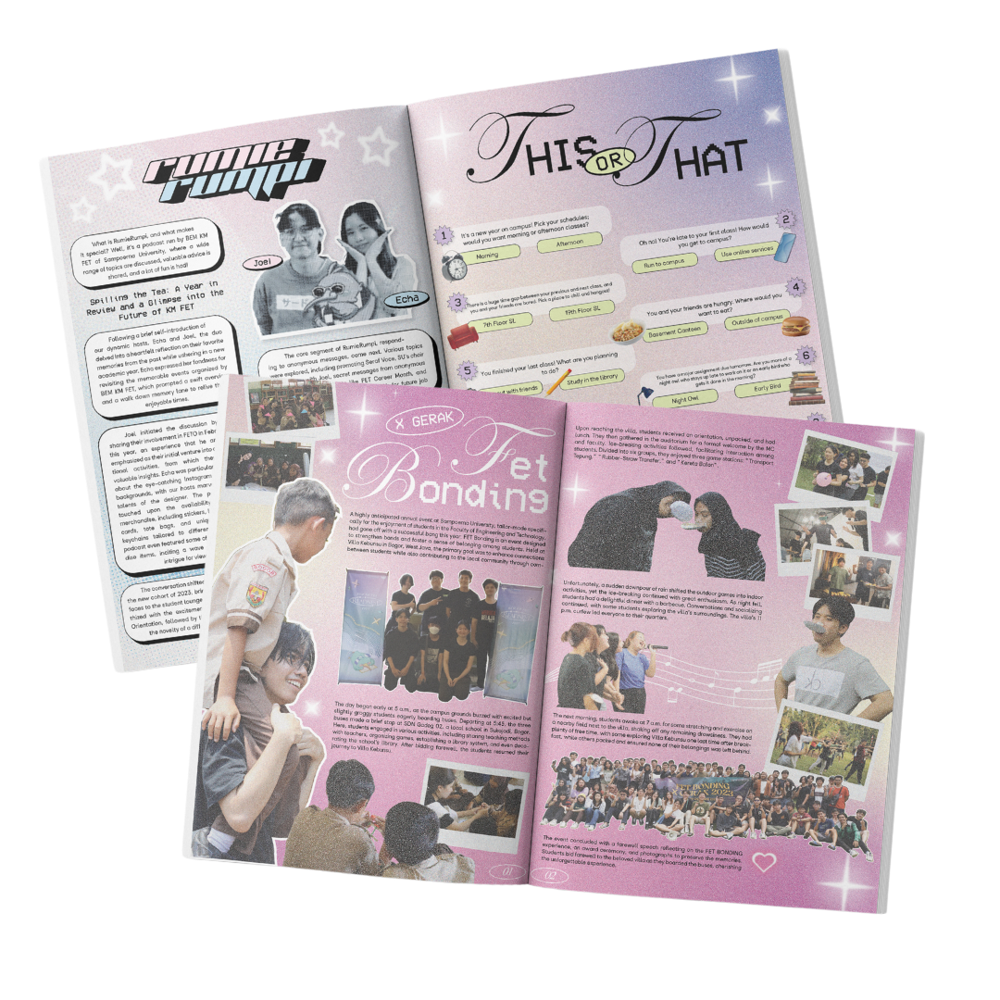
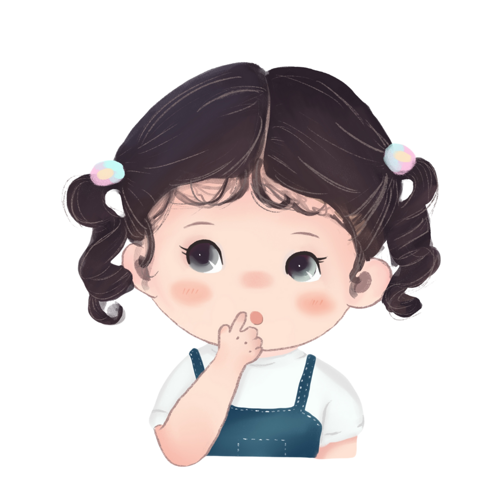
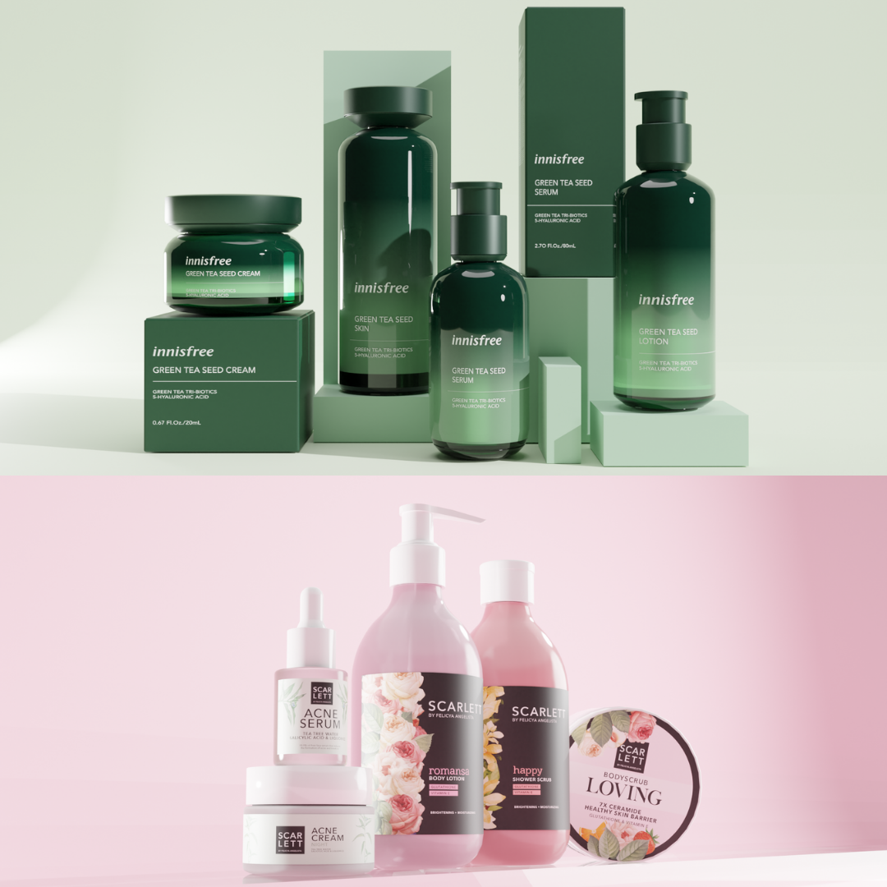

MAGAZINES
These are some pages I made for Sampoerna University's Faculty of Engineering and Technology magazine. The magazine includes the faculty's events and contents the Students Executive Board, as well as the magazine's own interactive content.
ILLUSTRATIONS
This is an illustration of my cousin as it was her 3rd birthday and her mother asked me to draw her to put in souvenirs as stickers. I used procreate for this illustration as I try my best to capture the iconic features of my cousin, her curly hair and doe eyes.
3D DESIGNS
These are the 3D models I made for the brand Innisfree and Scarlett Whitening for university assignments. I have made changes from the original Scarlett's packaging as it is my goal in the assignment to create a more visually appealing packaging design to attract more customers.
INSTAGRAM POST

This is a 9-grid Instagram post I made with another member of the Social Media and Design team of Sampoerna University Olympics, which is an event held every year by the university's student board. These posts show the games and competition list available for registrants. It is designed Monopoly-styled as we have chosen the theme to be playful this year.
PACKAGING

This is a Muesli packaging I have made as an individual project for Color and Material class in the 2nd semester of college. Through this class and project, I have learned how colors have different meaning and can create different effects on people, as well as representing character, which I have applied to this packaging. Since Muesli mostly contains fruits, I have made the packaging to be more colorful and playful as the food gives energy to people. The dark bluish-purple and beige, with a hint of pink here and there, creates a premium, yet still approachable look to the packaging.
LOGOs

This is a logo I have made for a project in creating my own advertising company for Visual Communication and Advertising class in college. The name I chose is Come True, which resonates with the goal of making our clients' dream come true in engaging more audience. The star represents the clients' goals and the curved 'e' represents the company's flexibility in trying different methods and approach to reach said goal.